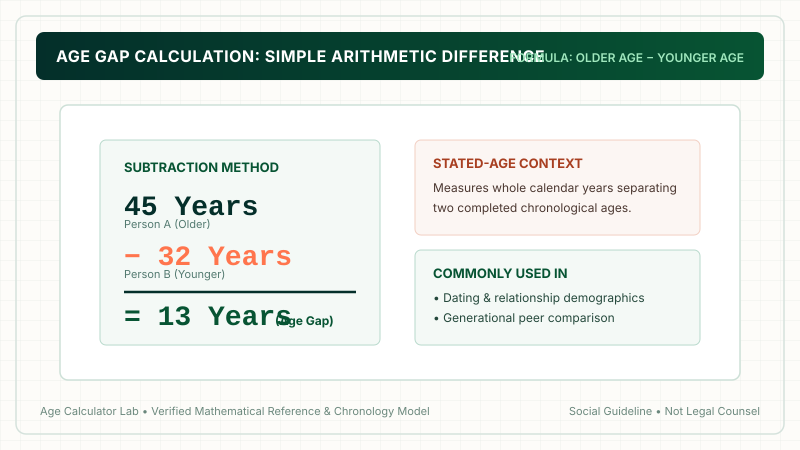
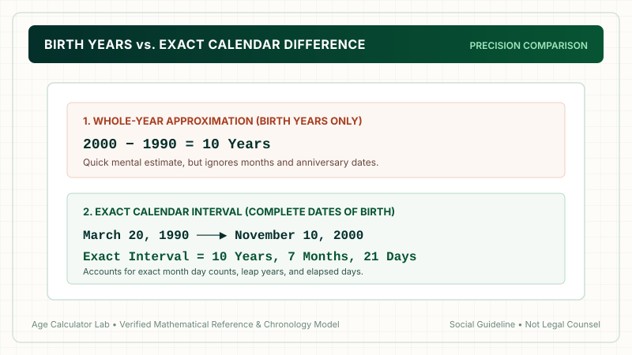

Age gap and age difference are often treated as the same thing, especially when people compare the ages of two people. In simple terms, both can refer to how many years separate two ages. However, the exact meaning can depend on whether you are comparing stated ages, dates of birth, or a relationship context. An age gap calculator can help compare two whole ages, while an age difference calculator can determine the exact calendar interval between two birth dates. Understanding the terminology makes it easier to interpret results correctly.
1. What Is an Age Difference?
An age difference is the numerical or calendar interval separating the ages of two individuals. At its most fundamental mathematical level, an age difference simply quantifies how much older or younger one person is relative to another.
Consider a simple whole-number example: if Person A is 40 years old and Person B is 30 years old, the subtraction is straightforward:
40 − 30 = 10 years
Therefore, the age difference is 10 years. In everyday dialogue, this is how people naturally calculate differences between siblings, classmates, colleagues, or public figures.
However, an age difference can also refer to a precise calendar calculation when complete dates of birth are provided. If Person A was born on January 15, 1986, and Person B was born on September 20, 1996, simply comparing their current completed ages might not convey the exact span between their birthdays. Depending on which month of the year you perform the calculation, their displayed whole ages might be 10 years apart during some months and 11 years apart during others. Utilizing an online age difference calculator accounts for complete dates, leap years, and elapsed months to provide exact calendar accuracy.
2. What Is an Age Gap?
An age gap generally refers to the span of time that separates two people's chronological ages. While mathematically identical to an age difference in simple subtraction, the phrase "age gap" carries distinct conversational and social connotations.
For example, if Person A is 35 and Person B is 28, the age gap is 7 years:
35 − 28 = 7 years
The term "age gap" is overwhelmingly favored in relationship discussions, romantic sociology, and popular culture (e.g., "age-gap relationships," "mind the gap," or dating demographics). Conversely, "age difference" is more broadly and neutrally applied across non-romantic contexts such as family genealogy, workplace seniority, demographic research, and historical comparisons.
Importantly, neither term possesses a rigid, universally fixed legal definition. Both are descriptive terms derived from chronological arithmetic.

3. Age Gap vs Age Difference: Are They the Same?
In standard everyday conversation, age gap and age difference are synonymous. If two people are 8 years apart, you can say "their age gap is 8 years" or "their age difference is 8 years," and virtually everyone will understand you perfectly.
The distinction between them lies in context, nuance, and measurement methodology rather than basic arithmetic:
| Term | Common Meaning | Typical Context |
|---|---|---|
| Age difference | Difference between two people's ages | General (siblings, coworkers, history, general math) |
| Age gap | Difference separating two people's ages | Couples, dating demographics, generational separation |
| Calendar age difference | Difference based on exact birth dates | Precise calculation (years, months, days) |
| Age difference in years | Whole-year comparison | Everyday estimation and mental subtraction |
In everyday language, age gap and age difference describe the same numerical separation between two ages. The primary difference is conversational context rather than mathematical structure.
4. How to Calculate Age Difference
To calculate the age difference between two individuals, you need two values: the age of the older person and the age of the younger person. You simply subtract the smaller number from the larger number.
The Core Age Difference Formula
Worked Example: If one sibling is 42 years old and the younger sibling is 31 years old:
42 − 31 = 11 years
Therefore, the age difference between the siblings is 11 years.
When you have complete birth dates, you can calculate the exact calendar interval. Rather than producing a round number of years, a calendar-based calculation provides years, months, and days. To find your exact interval down to the day, use our verified Age Difference Calculator.
5. How to Calculate an Age Gap
Calculating an age gap follows the identical arithmetic method. You take the two ages and determine the difference between them:
Person A = 45 | Person B = 32 ➔ 45 − 32 = 13 years
The age gap is 13 years. However, people frequently wonder why their age gap seems to "change" during the calendar year. This occurs because human birthdays do not fall on the same day. Between Person A's birthday and Person B's birthday, their whole-number age gap may temporarily appear one year larger or smaller until both have celebrated their birthdays for that calendar year.
6. Age Gap Formula
To summarize both calculations clearly, mathematical models define the two primary ways people measure the separation between two ages:
Standard vs Calendar Age Gap Formulas
The first formula measures the span between completed whole years. The second formula calculates the exact elapsed time interval between two specific calendar moments on the timeline.
7. Age Difference Formula & Calendar Intervals
When people ask for the "age difference formula," they often confuse simple birth-year subtraction with calendar intervals. For example, consider two people born in 1990 and 1980:
1990 − 1980 = 10 years
While subtracting birth years yields 10 years, that number is only accurate on the exact day when both individuals have had their birthdays. If Person A was born in January and Person B in December, their actual calendar age difference could be nearly 11 years or only 9 years and two months depending on the exact dates.

8. Common Age Gap Examples
The table below provides straightforward numerical age differences across common adult age combinations:
| Person A (Age) | Person B (Age) | Age Difference | Descriptive Span |
|---|---|---|---|
| 25 | 24 | 1 year | Very close peer age |
| 25 | 20 | 5 years | Early twenties demographic |
| 30 | 25 | 5 years | Typical young adult span |
| 30 | 20 | 10 years | One decade difference |
| 35 | 30 | 5 years | Mid-career adult span |
| 40 | 30 | 10 years | One decade difference |
| 45 | 35 | 10 years | Mid-life demographic span |
| 50 | 40 | 10 years | Mature adult span |
| 60 | 45 | 15 years | Multi-generational span |
These examples describe purely numerical age differences. An arithmetic calculation does not determine relationship compatibility, emotional maturity, personal happiness, or whether an age gap is suitable for any specific couple.
9. Age Gap vs Age Difference in Relationships
In relationship contexts, people frequently discuss age gaps in relation to social norms, generational cohorts, and life milestones. In our comprehensive guide to age gaps in relationships, we explore how age difference influences life stages.
Key relationship realities to keep in mind regarding age differences:
- "Age gap" is conversational shorthand: When couples say they have an "age gap," they are describing the arithmetic span between their birthdays.
- Context transforms the meaning: A 5-year age difference between a 19-year-old and a 24-year-old involves vastly different life transitions than a 5-year difference between a 40-year-old and a 45-year-old.
- Age does not equal a compatibility score: No calculation can assess mutual values, communication styles, emotional maturity, or financial harmony.
- Distinct from the dating rule: A numerical age gap measures what is. The social dating age rule (half your age plus seven) attempts to prescribe what is socially customary.
10. Why Dates of Birth Can Matter
Why do complete dates of birth matter when calculating an age gap? Consider this real-world example:
Person A: Born March 20, 1990
Person B: Born November 10, 2000
Subtracting birth years: 2000 − 1990 = 10 years
Exact calendar interval: 10 years, 7 months, and 21 days
Subtracting birth years provides a rapid estimate, but comparing complete birth dates provides the exact calendar interval. For legal documents, employment eligibility, milestone planning, or insurance qualifications, exact calendar math is necessary.
11. Age Gap vs Exact Calendar Difference
When you use an interactive calculation tool, understanding the distinction between whole-number age subtraction and calendar interval calculations ensures you choose the right tool for your needs:
- Stated Whole Ages: Compares two completed ages (e.g., 34 and 28 ➔ 6-year gap). Perfect for quick social discussions.
- Exact Calendar Interval: Evaluates two full dates of birth, calculating total days elapsed, adjusting for leap years, and breaking down the result into years, months, and days.
12. Age Gap Calculator vs Age Difference Calculator
Age Calculator Lab provides dedicated tools tailored to each specific calculation intent:
| Tool | Primary Purpose | Input Required | Output Format |
|---|---|---|---|
| Age Gap Calculator | Compare the age separation between two individuals | Two whole ages or birth dates | Years & months gap with generational analysis |
| Age Difference Calculator | Calculate precise calendar duration between two dates | Two full calendar dates | Exact years, months, days, total days, hours |
| Dating Age Calculator | Find acceptable dating age bounds using the half-your-age rule | One individual's age | Minimum & maximum dating age range |
| Age Calculator | Calculate a single person's current chronological age | One date of birth | Current age in years, months, and days |
13. How to Calculate Age Difference Manually
To calculate an age difference manually without a digital tool, follow these three simple steps:
- Step 1 — Identify the older and younger age: Confirm which person has the earlier birth date or larger completed age.
- Step 2 — Subtract the younger age from the older age: Use basic subtraction:
Older Age − Younger Age. - Step 3 — Adjust for upcoming birthdays: If calculating from birth dates, check whether the younger person has already celebrated their birthday this calendar year. If not, deduct one year from the year-difference and calculate remaining months.
Worked Manual Example:
Suppose Person A was born on August 12, 1988, and Person B was born on February 25, 1997. As of September 1, 2026, Person A is 38 years old and Person B is 29 years old. 38 − 29 = 9 years. Because both have had their 2026 birthdays, the current whole-year age gap is exactly 9 years.
14. Common Mistakes When Calculating Age Gaps
Avoid these five frequent pitfalls when calculating age differences:
- Mistake 1 — Only subtracting birth years: Subtracting birth years ignores birth months and days, frequently producing a one-year error for part of every year.
- Mistake 2 — Assuming age gaps remain identical during birthdays: A whole-number age gap changes temporarily between two people's birthdays each calendar year.
- Mistake 3 — Confusing age gap with dating age rules: An age gap is purely descriptive math. The dating age rule is a separate cultural guideline that establishes a range.
- Mistake 4 — Treating age gap as a compatibility score: Compatibility depends on interpersonal alignment, emotional health, and life goals, not an arithmetic subtraction.
- Mistake 5 — Confusing age gaps with statutory laws: An age gap between consenting adults is purely social. Statutory laws of adulthood and age of consent strictly govern age differences involving minors regardless of any arithmetic formula.
15. Does Age Gap Tell You Anything About Compatibility?
The short answer is no. A mathematical calculator can measure elapsed time, but it cannot measure human connection, shared values, emotional maturity, life satisfaction, or communication.
Two couples with the exact same 7-year age gap can experience radically different dynamics depending on career stability, parenting goals, financial priorities, and personal integrity. Age is merely one demographic characteristic among dozens that shape adult partnerships.
16. Frequently Asked Questions
Is age gap the same as age difference?
In everyday language, age gap and age difference often mean the exact same numerical separation between two people. However, "age gap" is most commonly used in romantic relationship discussions, while "age difference" is a broader mathematical term used for siblings, coworkers, historical figures, or exact calendar calculations.
How do you calculate an age gap?
An age gap is calculated by subtracting the younger person's age from the older person's age (Older Age − Younger Age). For example, if one person is 42 and the other is 30, the age gap is 42 − 30 = 12 years.
How do you calculate the age difference between two people?
To calculate the age difference, subtract the earlier completed age from the older completed age. If exact dates of birth are known, you calculate the elapsed calendar duration between the two dates (years, months, and days) for greater precision.
Is a 5-year age gap the same as a 5-year age difference?
Yes. When comparing stated whole-number ages, a 5-year age gap and a 5-year age difference represent identical mathematical separations of five elapsed years.
Why can age calculators give different results for the same two people?
Calculators can yield different figures depending on whether they simply subtract birth years (e.g., 2000 − 1990 = 10) or calculate exact elapsed calendar intervals that account for specific months, days, anniversary dates, and leap years.
Is an age gap important in relationships?
Numerical age difference is only one demographic variable. Relationship researchers and demographic data emphasize that shared values, life-stage alignment, mutual respect, and communication matter far more than arithmetic years alone.
What is the difference between an age gap and the dating age rule?
An age gap is a descriptive arithmetic measurement between two ages (Older − Younger). The dating age rule (half your age plus seven) is a separate prescriptive social guideline that calculates a suggested minimum or maximum age boundary for a single individual.
Can I calculate an exact age gap from dates of birth?
Yes. A calendar-based age difference calculator compares two complete birth dates to determine the exact number of years, months, and days separating two individuals.
Which calculator should I use for comparing two people?
Use the Age Gap Calculator to compare whole-year separations between two people, the Age Difference Calculator for precise calendar intervals between two birth dates, and the Dating Age Calculator when finding rule-based dating boundaries for one person.
17. Final Takeaway
Whether you call it an age gap or an age difference, the arithmetic remains simple: subtract the younger age from the older age. If you need a quick mental estimate, subtracting whole ages is sufficient. If you require absolute calendar precision for legal documents, milestones, or curious comparisons, using complete dates of birth provides the exact elapsed years, months, and days.

Methodology & Verification Standards
- Calculation Type: Calendar-based and whole-year chronological difference.
- Basic Formula:
Older Age − Younger Age = Age Gap. - Exact Comparison: Elapsed calendar intervals computed from complete dates of birth (Gregorian calendar standards).
- Editorial Purpose: Informational, educational, and computational reference.
- Review Date: October 2026.